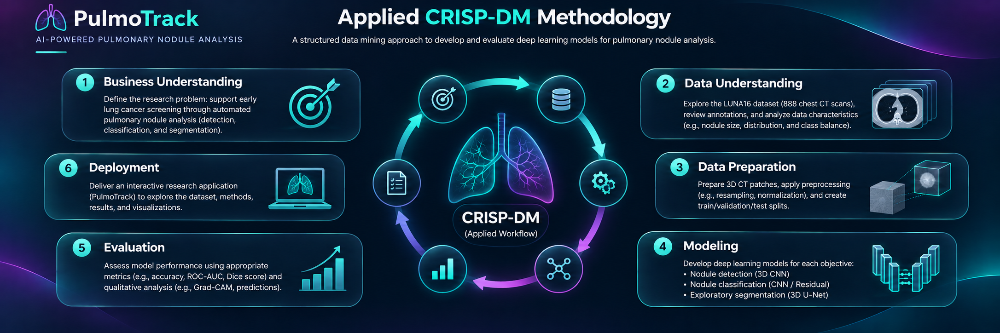
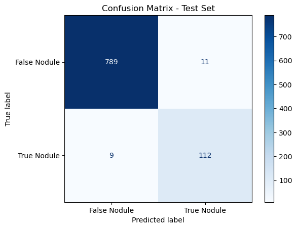
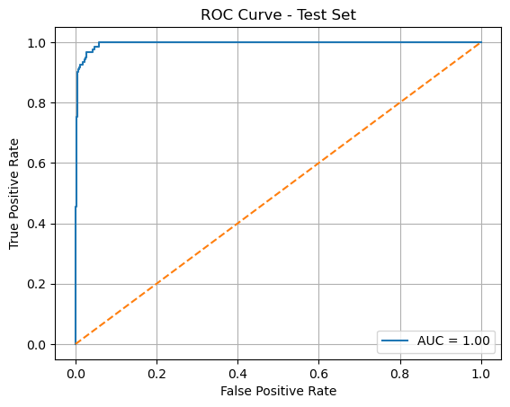
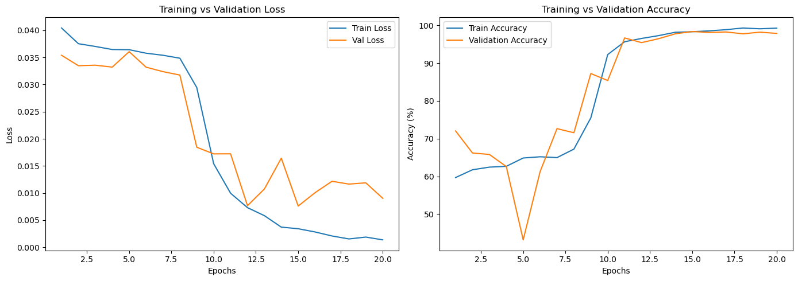
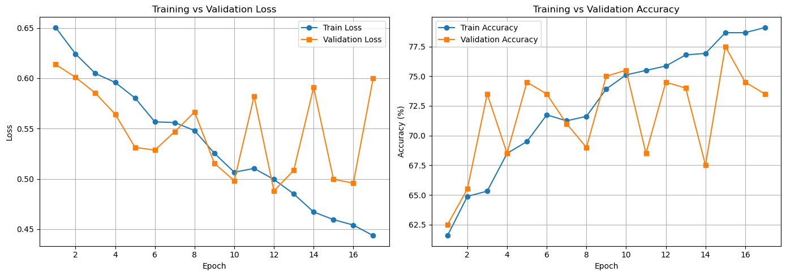
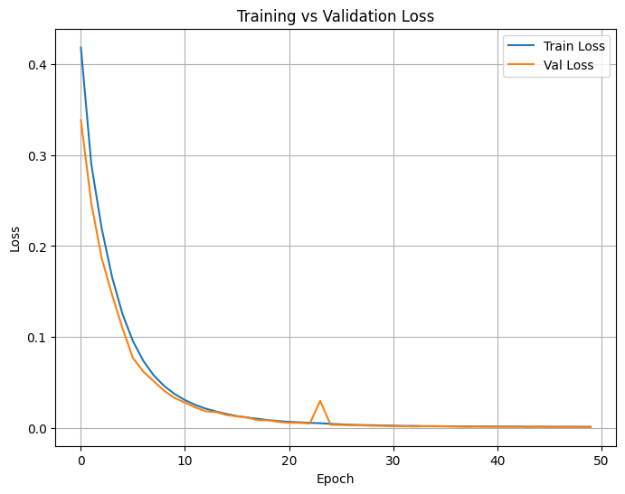
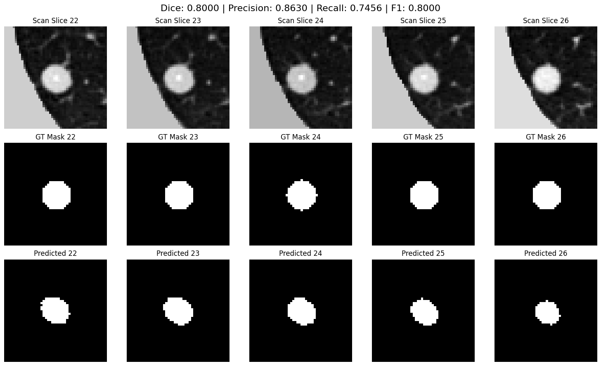

Technologies
Research: Python, PyTorch, torchvision, NumPy, pandas, SciPy, scikit-learn, SimpleITK.
Analysis & delivery: Jupyter Notebook, Google Colab, Matplotlib, Plotly, Pillow, Streamlit, Git, GitHub and Streamlit Community Cloud.
Project Overview
Lung cancer is the leading cause of cancer-related death worldwide and is often diagnosed at an advanced stage, when treatment options are more limited. Earlier identification and appropriate follow-up can improve the opportunity for effective treatment.
PulmoTrack explores how deep learning can analyze pulmonary nodules in volumetric CT data. The project connects medical-image preprocessing, three research objectives, model evaluation and a deployed interface that makes the experiments understandable to a portfolio audience.
The work is an academic research study. Its recorded models evaluate nodule candidates and masks; they do not establish a clinically validated cancer diagnosis system.
Scientific context: World Health Organization — Lung cancer.
My Contributions
- LUNA16 preprocessing. Worked on CT resampling, annotation and candidate inspection, world-to-voxel coordinate conversion, intensity normalization and 3D patch preparation.
- Detection and classification. Developed and studied 3D candidate-screening and binary classification approaches, comparing their saved training histories, confusion matrices and ROC evaluations.
- Exploratory segmentation. Investigated 3D U-Net, attention and residual-attention variants, and tiny-nodule oversampling, documenting both promising summaries and difficult positive-only cases.
- Results and documentation. Organized notebook outputs, kept evaluation cohorts and checkpoint results distinct, and contributed to the team research manuscript.
- Deployment. Created a Streamlit research showcase with CT visualizations, model overviews, result interpretation, source resources and access to the research paper.
LUNA16 Dataset
LUNA16 (Lung Nodule Analysis 2016) is derived from LIDC-IDRI and contains 888 volumetric chest CT scans. It provides CT volumes, candidate locations and nodule annotations for pulmonary nodule research.
The official reference standard includes nodules at least 3 mm in diameter accepted by at least three of four radiologists. Scans with slice thickness greater than 2.5 mm were excluded. The CT collection is approximately 90 GB in scale; the deployed showcase uses saved outputs rather than distributing the dataset.
The project prepares different patch collections for different experiments: 64³ voxels for detection/classification and 48³ voxels for the archived segmentation studies.
Dataset source and access: LUNA16 official data page.
Project Methodology
PulmoTrack follows the CRISP-DM methodology, from understanding the research problem and preparing LUNA16 CT data to modeling, evaluation, and deployment. This iterative workflow guides the three research objectives and the presentation of their results in the Streamlit showcase.


Explore the Three DSOs
Data processing prepares the CT scans for learning; modeling builds and trains networks using that prepared data. Before preparing the task-specific datasets, we resampled CT volumes to 1 × 1 × 1 mm voxel spacing and converted annotation coordinates from millimetres to voxel locations using each scan’s origin and spacing, accounting for medical-image order (x, y, z) and NumPy array order (z, y, x).
The evaluation tables preserve each saved checkpoint’s recorded cohort. Accuracy is calculated from the original confusion matrix, while ROC-AUC comes from the corresponding recorded output.

DSO1 — Nodule Detection
This objective screens supplied candidate locations. Each input is a 3D patch around a candidate, and the output is a nodule or non-nodule label.
Data Processing
- Candidate matching: Compared candidates with annotated nodule centres from the same scan. A distance below 5 mm defined the strict positive label for the selected dataset; preparation also explored a looser 10 mm label.
- Dataset selection: Retained 1,215 positive candidates and randomly sampled 8,000 negatives, producing 9,215 patches. The larger negative collection exposes the model to varied non-nodule appearances.
- Patch extraction: Extracted 64 × 64 × 64 patches around candidates and padded border patches to preserve the expected dimensions.
- Normalization and tensors: Subtracted each patch’s mean and divided by its standard deviation, then created one-channel tensors with shape
(1, 64, 64, 64). - Dataset split: Used a seeded random patch split of 6,451 training, 1,843 validation and 921 test examples.
Models Applied
Applied a U-Net-style 3D encoder classifier with 32 → 64 → 128 → 256 feature channels. Convolution and pooling build 3D features, followed by global average pooling and a linear head that produces two class scores. This model has no segmentation decoder and predicts a patch label, rather than a boundary or bounding box.
Training used weighted focal loss (γ = 2), Adam with learning rate 0.0001, batch size 16 and 20 recorded epochs. Class weights emphasize less frequent positive examples, while focal loss concentrates learning on difficult cases. The lowest validation loss determined the selected checkpoint.

Results & Evaluation
| Cohort | Patches | Accuracy | ROC-AUC |
|---|---|---|---|
| Validation | 1,843 | 98.37% | 0.9928 |
| Test | 921 | 97.83% | 0.9961 |






On the 921-patch test cohort, the saved model correctly identifies 112 of 121 nodule patches (92.56% sensitivity), with 11 false positives and 9 false negatives. These are candidate-level outcomes; they do not establish false positives per full CT scan.
Interpretation: The test accuracy of 97.83% and ROC-AUC of 0.9961 show strong separation on the recorded candidate cohort. Sensitivity of 92.56% also makes the remaining nine missed nodule patches visible.

DSO2 — Nodule Classification
The recorded task classifies a 3D candidate patch as a true nodule or false nodule. Although the wider project discusses benign/malignant classification, these implemented evaluations use binary candidate labels.
Data Processing
- Separate patch collection: Prepared this dataset independently of the 9,215 detection examples. The preparation cell filters candidates marked as class 1 and compares their positions with annotation centres using a 6 mm matching threshold.
- Patch extraction and normalization: Extracted 64 × 64 × 64 patches, padded when needed, and applied mean-and-standard-deviation normalization.
- Labels and storage: Saved tensors into separate folders, with label 1 for true nodules and 0 for false nodules.
- Dataset and initial split: The notebook reports 1,243 true-nodule and 761 false-nodule patches, totalling 2,004. The initial split contains 1,603 training, 200 validation and 201 test patches.
Models Applied
- Improved 3D CNN: Three convolution blocks followed by adaptive pooling, a dense layer, dropout and a two-class output; 17 recorded epochs.
- ResNet3D Lite: Residual blocks combine transformed features with shortcut connections, followed by global pooling and a classification head; 6 recorded epochs.
- U-Net encoder classifier: Four encoder stages followed by global pooling and a dense two-class head; 30 recorded epochs.
All three architectures use cross-entropy loss and Adam with an initial learning rate of 0.0001. Dropout regularizes the CNN and U-Net heads. Validation loss guides checkpoint selection, and saved evaluations are kept separate from final-epoch logs.

Results & Evaluation
| Study / cohort | Patches | Accuracy | ROC-AUC |
|---|---|---|---|
| Improved 3D CNN · validation | 200 | 74.50% | 0.8269 |
| Improved 3D CNN · test | 201 | 74.63% | 0.8335 |
| ResNet3D Lite · validation | 401 | 72.07% | 0.7678 |
| U-Net encoder · validation | 200 | 74.00% | 0.8116 |


The Improved 3D CNN test evaluation identifies 107 of 123 true-nodule patches, with 35 false positives and 16 false negatives. Its accuracy and AUC describe binary candidate labels, not malignancy diagnosis.
How to compare these results. Each model retains its own recorded cohort. The ResNet matrix contains 401 patches despite an earlier 200-patch validation log. Splitting is by patch, and a patient-disjoint benchmark is not established. These studies support analysis of the recorded runs, not a controlled architecture ranking.
Interpretation: The Improved 3D CNN reaches 74.63% test accuracy and ROC-AUC 0.8335 on its 201-patch cohort. Its 35 false positives and 16 false negatives show the remaining classification errors. The differing evaluation cohorts prevent treating these recorded runs as a controlled ranking of the three architectures.

DSO3 — Exploratory 3D Segmentation
This objective predicts a mask identifying nodule voxels within a 3D CT patch. It is a parallel research exploration, rather than a prerequisite for detection or classification.
Data Processing
- Volume preparation: Prepared lung regions, clipped intensities to −1000 to 400 HU and scaled them to the range [0, 1].
- Reference masks: Created spherical masks from annotated nodule centres and diameters. These approximate reference regions are not manually traced nodule boundaries.
- Patch extraction: Extracted 48 × 48 × 48 positive CT patches with corresponding mask patches. Negative patches were sampled away from annotated nodules and paired with empty masks.
- Augmentation and normalization: Explored flips, rotations, zoom, noise and intensity shifts, with patch-level min–max normalization in the model loader.
- Splits and tiny nodules: The baseline records 2,036 training and 509 validation patches. Later experiments oversampled selected small-nodule examples to increase their exposure during training.
Models Applied
The segmentation flow is CT patch → encoder → bottleneck → decoder → voxel probability map. Decoder upsampling and encoder-to-decoder skip connections help reconstruct spatial detail.
- 3D U-Net: Baseline encoder–decoder architecture.
- Attention 3D U-Net: Attention gates weight features passed through skip connections.
- Residual Attention 3D U-Net: Residual convolution blocks combined with attention gates.
- Tiny-nodule training: Baseline architecture with modified sampling and augmentation.
Recorded training used binary cross-entropy loss and Adam at 0.0001. A sigmoid produces voxel probabilities, and a 0.5 threshold converts them into binary masks.

Results & Evaluation
Segmentation results depend strongly on the selected patches and the handling of empty masks. The table preserves these separate experimental contexts; all values are notebook-reported summaries.
| Model study | Evaluation context | Patches | Reported score |
|---|---|---|---|
| 3D U-Net | Five positives · A | 5 | Dice 0.2115 |
| 3D U-Net | Five positives · B | 5 | Dice 0.3127 |
| 3D U-Net | Mixed validation loader | 509 | Dice 0.9504 |
| Attention U-Net | Five positive patches | 5 | Dice 0.1599 |
| Attention U-Net | Ten mixed patches | 10 | Dice 0.9800 |
| Residual attention | Ten positives · initial | 10 | Dice 0.1200 |
| Residual attention | Ten positives · later | 10 | Dice 0.0348 |


The 0.9504 validation Dice comes from a mixed, augmented loader, where smoothing assigns empty prediction/reference pairs a Dice near 1. The attention model’s mixed-patch evaluator similarly assigns perfect scores to empty pairs. Positive-only samples show the remaining difficulty of recovering small nodule regions.
Tiny-nodule augmentation retains saved prediction examples and a final validation binary cross-entropy loss of 0.0446. No Dice, precision, recall or F1 evaluation was recorded for that run; a lower loss is not an overlap score.


Evaluation context: The notebook applies random augmentation to images and masks through separate calls, so their spatial transformations are not guaranteed to match; validation also inherits augmentation. Patch splits do not establish patient-disjoint evaluation. Together with the mixed-versus-positive-only score differences, these limitations keep the segmentation findings exploratory.
Deployment
My PulmoTrack contribution is hosted on Streamlit Community Cloud, with the GitHub repository as its deployment source. The interface preserves the dark navy and teal medical-imaging identity, sidebar navigation and CT-focused visual presentation.
Visitors can explore model architectures, recorded metrics, training histories, original segmentation predictions, pilot Grad-CAM, research resources and the manuscript viewer. The app presents saved evidence; it requires no CT dataset download or live model execution.
Delivery workflow: Research notebooks → exported figures and result summaries → Streamlit interface → GitHub → Streamlit Community Cloud.
The website is a completed research showcase, rather than a patient-upload or diagnostic inference service. Repository changes can be reflected in the deployed app through Community Cloud’s GitHub integration.
Deployment reference: Streamlit Community Cloud documentation.
Research Paper
Title: PulmoTrack: A Deep Learning Solution for Pulmonary Nodule Segmentation, Detection, and Classification on CT and Chest X-ray Scans
Document: Team research manuscript · May 2025 · 11 pages.
Authors: Farah Sayari and co-authors.
The manuscript covers the broader team project, including CT and chest X-ray work. This portfolio page focuses on the LUNA16 CT contribution.
Paper-reported LUNA16 highlights
The manuscript reports segmentation Dice 0.95, detection sensitivity 92% at 1.5 false positives per scan, and classification AUC 0.91 (pp. 4–5).